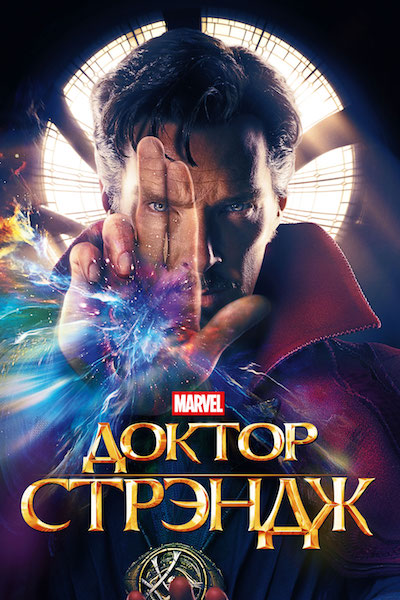
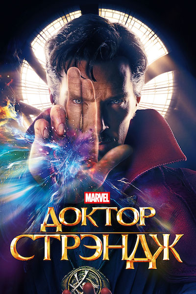

Тор
Могущественный бог грома Тор, достойный носить величайшее оружие во вселенной –
волшебный
молот
Мьёльнир — никогда не перестаёт сражаться за правое дело и защищать любимую
Землю.
Тор — дитя союза Одина, владыки Асгарда, и Геи, богини Мидгарда (Земли). Тор появился на
свет в
одной из норвежских пещер, откуда Один забрал его на воспитание в Асгард. Тор провёл детство
со
своим приёмным братом Локи, который постоянно ему завидовал и, в конце концов, вздумал убить
брата.
Так началась их многовековая вражда.
Когда Тору исполнилось восемь, Один сделал для него Мьёльнир — молот, наделённый невероятной
магической силой. Однако право обладать им Тор должен был заслужить, и только спустя годы
упорных
тренировок и славных подвигов он доказал, что достоин этой великой чести и был провозглашён
великим
воином Асгарда.
Когда Тор осознал свои ошибки и в очередной раз доказал своё право носить Мьёльнир, Один
разрешил
ему вернуться домой. Однако Тор решил остаться на Земле, потому что чувствовал невероятную
тягу к
людям. Теперь, заполучив «двойное гражданство», Тор помогает людям на Земле и народу
Асгарда, а
также является одним из самых могущественных участников команды Мстителей.
Сын двух могущественных богов, Тор обладает невероятной силой и выносливостью даже в
сравнении с
другими жителями Асгарда. Кроме того, Тор может управлять погодой и вызывать молнию.
Мьёльнир только
усиливает его возможности, делая его непобедимым противником. Молот всегда возвращается к
Тору, враг
не может им завладеть, ведь поднять Мьёльнир может только тот, кто достоин править Асгардом.


 
